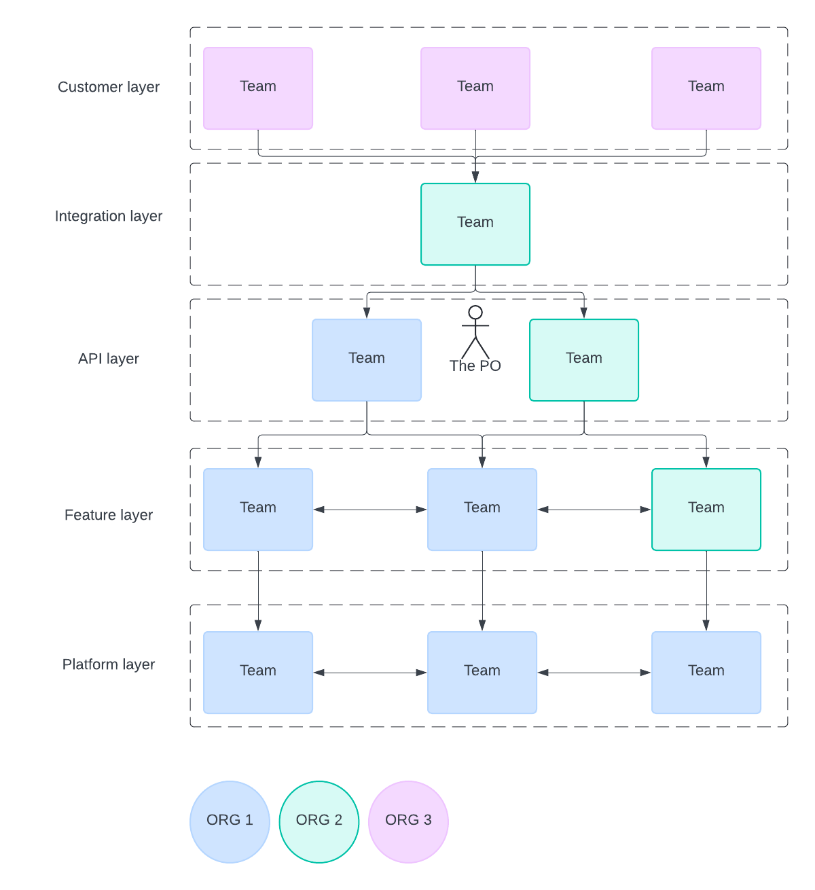

Firefighting in the Dependency Hell: a Case Study
Disclaimer
The following case study focuses on dependency management, omitting other details that are irrelevant to the topic or might be sensitive to share publicly.
I do not necessarily speak on my behalf. Let's assume some Product Owner (The PO) appeared in such a situation and acted a certain way to resolve the dependencies.
Background context
There are a few details to be mentioned to provide context:
- PO joined an ongoing project at its critical stage. Thus, there was no room for cross-organizational changes.
- PO had a flexible number of responsibilities, which might vary considerably from that of the vanilla Scrum product owner.
- PO had a great team; it would be impossible without them.
Dependencies structure
This is what the team topology looks like, approximately. And that impacted how dependencies are distributed.

Three organizations are involved, each with their own development teams and management. It is obvious that each side pursues its own goals in accordance with contractual obligations.